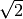
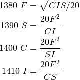

exposure – Exposure Calculator¶
Analysis¶
This is three Solver objects, one for camera exposure, one for enlarger exposures and one for filter exposure correction.
Camera¶
“CAMERA EXPOSURES”
C: Footcandles (integer, rounded up) I: Film Speed (ISO) (integer) S: Exposure Time (fraction of 4000) F: Aperture ƒ/ (power of  Given C and I, a table of values can be computed.
Otherwise, these appear to be the relevant calculations for aperture and exposure.

An additional calculation.
E: Exposure Value (EV) From the code.
From http://en.wikipedia.org/wiki/Exposure_value
“EQUIVALENT EXPOSURES”
This is two aperture-exposure tables that show F-stop values and exposure for standard F-stop and standard exposure times.
The exposure times, S, are actually tweaked slightly in three ranges. Here’s one view.
This can also be looked at as “pretty” rounding based on the range of the value.
We define this floor function as follows.

Enlarger¶
“ENLARGER EXPOSURES”
F: Aperture ƒ/ (power of S: Exposure Time (fraction of 4000) X: length M: width H_O: Original Lens height This use case is confusing, since it seems to ask for the same data twice. It could be that it’s asking for an original exposure and then computing a revised enlargement from that original exposure description.
It requests Aperture, F, Exposure Time, S, and image size information.
Then it appears to request a new image size: either length of width. The other value will be computed from the initial size.
Then it will request aperture or exposure. Again. And compute aperture from exposure or vice versa. This appears to be based on values of Y and Q computed from the initial exposure.
L: length of new image W: width of new image

Filter¶
See http://en.wikipedia.org/wiki/Filter_factor
“EXPOSURE FACTOR / FILTER FACTOR”
S: Exposure time (sec.) without factor F: Aperture (ƒ/) without factor X: Exposure / Filter factor (a multiplier) Typical values range from 1 to 16. A 75% filter is 1.3, for example. New exposure time, S_f, given the filter’s factor:
New f-stop, F_f, given the filter’s factor:
Implementation¶
Legacy Output¶
The exposures and apertures shown are mathematically correct but,
due to the reciprocity failure characteristics of each particular
film emulsion, unusually short (less than 1/1000 sec.) or very long
(more than 5 sec.) indicated exposures may have to be increased by
a factor of up to 3x. Unusually long or short exposures can also
cause colour shifts in some colour films.
Quirks¶
2700 Z=INT(100*Z+0.5!)/100:RETURN
2710 Z=INT(10*Z+0.5!)/10:RETURN
2720 Z=INT(Z+0.5!):RETURN
Apparently, the CINT() function wasn’t available for line 2720.
Also, the DEF FN statement wasn’t used, either.
1680 IF X*M<>0 THEN 1690
1690 VIEW PRINT 5 TO 24:CLS:VIEW PRINT:LOCATE 5
L and W for desired length and width. How about moving up one letter L |rarr| M, W |rarr| X for original length and width? That seems sensible. L1 and W2 might be better, but M and X would be fine. The quirk is that M became old width instead of X being used for old width.